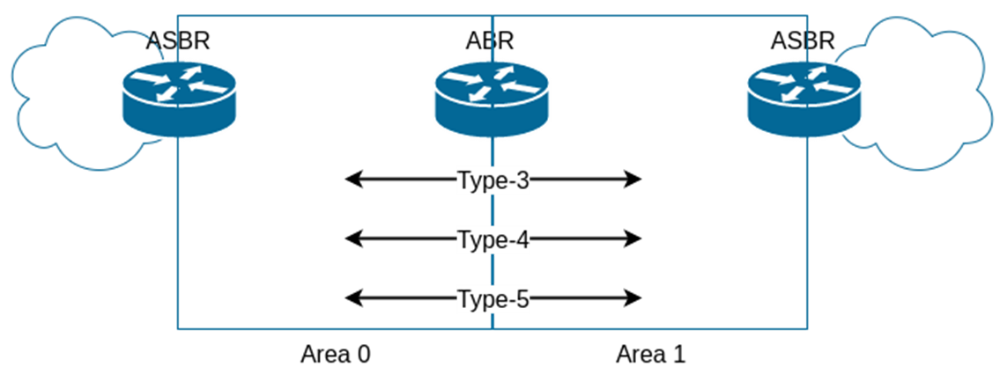
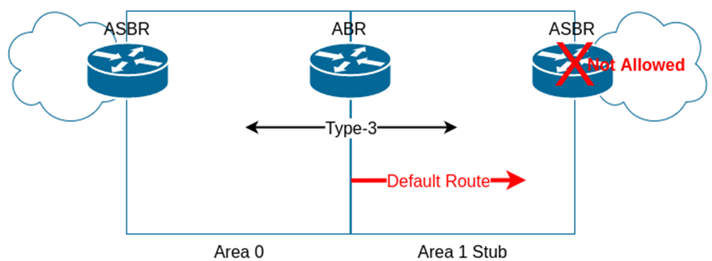
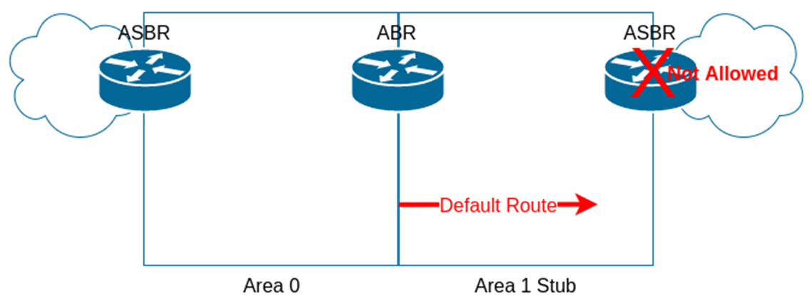
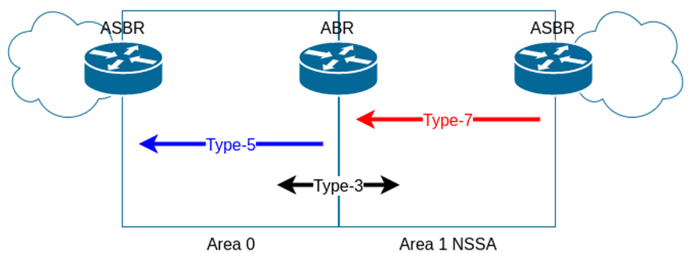
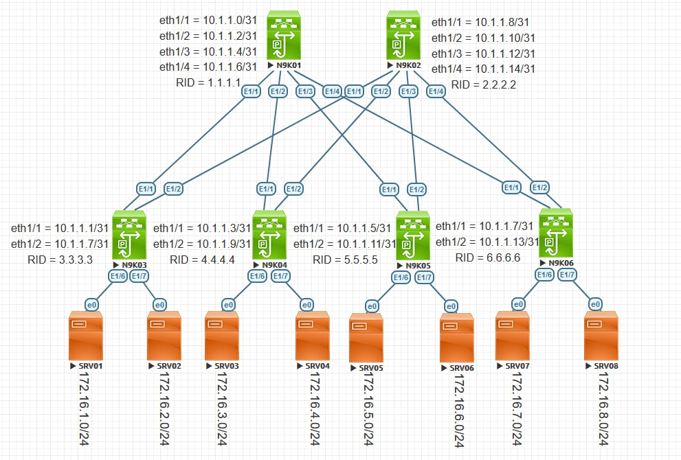

Open Shortest-Path First (OSPF)
OSPFv2 Overview
With Open-Shortest Path First (OSPF) as a Link-State routing protocol, routers build some information about the network. Those information include:
- Router ID
- Number of Links
- Links Descriptions
- Attached Router
- Subnet Mask
- Metric
The routers multicast these information (Link State Advertisement or LSA) to the segment. As a result, all routers in the same segment would have the same information. Since, all the routers within an area send those information (LASs) to each other, all other routers within the same area even if they are not in the same LAN segment, would have the same information. An area is a group of routers and router interfaces. In the end of the day, all routers in the same area would have the exact same information (Link-State Database or LSDB). Hence, the LSDB is the collection of all the LSAs known to a router. With command show ip ospf database, you can see the LSDB.
All routers within the area, then run an algorithm called Dijkstra Shortest Path First (SPF) to process the LSDB and to calculate the best path to the destination from a given source. (Pay attention that I said within the area. OSPF routers between the areas does not run SPF and inter-area routing is considered as a distance vector protocol). If multiple path to a destination exist, the router compares the costs then picks the lowest one to add the route to the routing table. With OSPF, the cost is the sum of the costs of outgoing interface only. If there is no win the better cost, the OSPF installs both routes into the routing table which causes load sharing in data plane.
Commonly Used OSPF Terms
Beside LSA, LSDB, Area, and SPF terminologies you have learnt above, we will discuss more about the following terms in this post.
- Area Border Router: A router which has interfaces connected to two or more areas with one of the areas being area 0. or area 0.0.0.0. Area 0 has another name which is backbone area.
- Backbone Router: Any router in area 0 only is called a backbone router.
- Internal router: Any router which is only in a single area.
- Designated Router (DR): On a multiaccess LAN, a DR performs special tasks including distributing the LSAs for the routers who report to him.
- Backup Designated Router (BDR): monitors the DR and becomes DR should the DR fails.
OSPF Message Types and Functions
- Hello: To discover the neighbors and to monitor the neighborship
- Database Description (DD or DPD): Exchanges LSIDs of the LSAs during initial topology exchange.
- Link-State Request (LSR): Sender of LSR packet (LSR contains the LSIDs of LSAs) will ask the Receiver of the LSR packet what LSAs the receiver send to the sender.
- Link-State Update (LSU): Typically sent is response to LSR message. Note that we do not have LSA message. LSU contains to LSAs. Wherever I say, LSA is sent, I mean that an LSU with LSA information is sent.
- Link-State Acknowledgement (LSAck): Sent to confirm the receipt of an LSU message.
Meeting Neighbors
Here are the states that two OSPF routers (OSPF feature must be enabled with NX-OS with feature ospf global command) pass to become fully adjacent. (Note that not for all router Fully adjacent is the final and steady state. 2-way can be the steady state if there is more than three routers in the same multiaccess segment). However, in CCIE Datacenter course, all our ospf links are point-to-point and as a result, the Full state is the final steady state.

Here is the OSPF neighbor State Reference
- Down: No hello is received from neighbor for more than dead interval - which is four times of hello interval.
- Attempt: After sending the hello, but before receiving neighbor’s hello.
- Init: Neighbor’s hello received.
- 2-Way: Hello is received and it has the router’s RID in it.
- ExStart: Negotiate the DD sequence numbers and master/slave logic used for DD.
- Exchange: Finished DD negotiation and start exchanging DD packets. If differences exist, move to loading state. if no difference, move to full state.
- Full: Neighbors are fully adjacent. Routing table calculation/recalculation begins.
OSPFv2 Configuration
Here is a sample configuration of OSPF configuration on NX-OS. Note that, you must enable the OSPF feature for OSPF configuration. Another side note is that, you will enable OSPF per interface bases.
N9K01# configure terminal N9K01(config)# feature ospf N9K01(config)# router ospf 1 N9K01(config-router)# router-id 1.1.1.1 N9K01(config-router)# interface ethernet 1/1 N9K01(config-if)# ip router ospf 1 area 0
Passive Interface
When we enable OSPF on an interface it does two things for us:
- Send hello packet over that link
- Advertise the network of that interface
When passive-interface is configured under the interface, OSPF stops sending the hello packets over that link. The end result is that, also OSPF advertises the network of that interface, but it does not build an OSPF neighborship with another router on that interface.
N9K01# configure terminal N9K01(config)# interface ethernet 1/7 N9K01(config-if)# ip ospf passive-interface
OSPF Network Types
This is per-interface setting. OSPF behaves differently on different networks. For example, you have DR/BSR election in Broadcast Multi Access interfaces, but we do not have this thing with Point-to-point and loopback interfaces. With leaf-and-spine design, since the LAN segment is shared only between only two Layer-3 interfaces, we’d better to change the network type from default broadcast to point-to-point in order to suppress DR/BDR Election.
| Interface Type | Uses DR/BSR? | Hello Interval | Neighbor Discovery? | More than two layer-3 interfaces allowed in the subnet? | Multicast/Unicast Communication? |
|---|---|---|---|---|---|
| Broadcast | Yes | 10 sec | Yes | Yes | Both |
| Point-to-point | No | 10 sec | Yes | No | Both |
| Loopback | No | - | - | No | - |
! Configure interface as a point-to-point N9K01# configure terminal N9K01(config)# interface ethernet 1/1 N9K01(config-if)# ip ospf network point-to-point ! Configure interface as a broadcast N9K01# configure terminal N9K01(config)# interface ethernet 1/1 N9K01(config-if)# ip ospf network broadcast
OSPF for IPv4 Configuration and Verification
Configuration
Verification
show running-config ospfdisplays what you have configured.show ip ospf interface briefdisplays the enabled interfaces through network command or via interface.show ip ospf neighborverifies the OSPF neighbors.show ip ospf databasedisplays the LSDB.show ip route ospfshows the post-SPF calculation routes
OSPF Default Route
Imagine you have a router which connects to the Internet for northbound and you have a default route on that router for Internet traffic. You also have a couple of routers southbound to that border router and you are running OSPF between them. How your internal routers would go to the Internet? One option is to add the default route on all routers towards your border router. Another option is to tell your border router to advertise its routes to the other routers. With command default-information originate or default-information originate always you can achieve this. The former required a present default route on the border router in order to be able to advertise to the rest of OSPF network, while the latter advertises always the default route regardless.
N9K01# configure terminal N9K01(config)# router ospf 1 N9K03(config-router)# default-information originate always
Route Redistribution
Redistribution is when a router takes routing information it has discovered in one routing protocol and distributes it into a different routing protocol.
N9K01# configure terminal N9K01(config)# router ospf 1 N9K01(config-router)# redistribute eigrp 1 route-map SMENODE_ROUTE-MAP
OSPFv2 LSA Types and OSPF Area Types
I need to cover LSA Types and Area Types both at the same time in this section. These both go hand in hand. First, Let us look at the LSA types:
| Type | Common Name | Description |
|---|---|---|
| 1 | Router show ip ospf database router |
Each router creates its own Type 1 LSA to represent itself for each area to which it connects. |
| 2 | Network show ip ospf database network |
Created by the DR: Advertises a multi-access network segment attached to a DR. |
| 3 | Network Summary show ip ospf database summary |
Type 3 LSAs represent networks from other areas An ABR will originate a Network Summary LSA to describe inter-area destinations |
| 4 | ASBR Summary show ip ospf database asbr-summary |
Originated by ABRs similar to Network Summary LSAs (Type 3) except that the destination they advertise is an ASBR RID not a network |
| 5 | External show ip ospf database external |
Created by ASBRs for external routes injected into OSPF. Advertises either a default route or destination external to the OSPF AS |
| 7 | NSSA External show ip ospf database nssa-external |
Type 7 LSAs are almost identical to Type 5 LSAs. Unlike Type 5 LSAs which are flooded throughout an OSPF AS, type 7 LSAs are flooded only within the not-so-stubby area in which it was originated. |
Now, let us move on to the next section which is OSPF Area Types
Standard Area
This area maintains a full link-state database.

Stub Area
ABR will block all external routes from going into stub area and it will inject a default route (as a type 3 LSA) to stub area to maintain the reachability to the external routes (There is no type 4 and type 5). Note that for adjacency, we need to match stub area flag for the neighbors.

On ABR as well as internal routers:
N9K01# configure terminal N9K01(config)# router ospf 1 N9K01(config-router)# area 10 stub
Totally Stub Area
If we have a default route with stub area, do we really need all O IA routes (Type 3 LSAs)?
If we do not need O IA routes, Totally Stub Area (an extension of stub area) could be a choice:
- On ABRs we issue command
area X stub no-summary - Issue command
area X stub**** on all routers inside area X except ABRs.

On ABR
N9K01# configure terminal N9K01(config)# router ospf 1 N9K01(config-router)# area 10 stub no-summary
On Internal routers, the configuration is identical to stub area configuration.
N9K01# configure terminal N9K01(config)# router ospf 1 N9K01(config-router)# area 10 stub
Not-So-Stubby Area (NSSA)
Issue command area X nssa
There is no default route injected into NSSA although Type-3 LSAs can pass. We have to explicitly configure it on ABRs. Generates Type-7 LSA; (O N2).
area 1 nssa default-information-originate
We cannot redistribute routes into Stub and Totally Stub areas; But we can redistribute into NSSA.
show ip ospf database: You can find ‘Tag’ field which shows the tag of remote AS if you have redistributed from BGP into OSPF.

On all routers within the area including the ABR issue the following commands:
N9K01# configure terminal N9K01(config)# router ospf 1 N9K01(config-router)# area 10 nssa
Totally NSSA
Like NSSA but 2 differences:
- Type-3 LSA cannot pass
- Default route is automatically injected (Type 3 LSA)
- There is no need to
area 1 nssa default-information-originate
- There is no need to
To configure, on ABRs we add no-summary keyword at the end of area X nssa OSPF router subcommand. area 1 nssa no-summary.
On ABR, we configure the following commands:
N9K01# configure terminal N9K01(config)# router ospf 1 N9K01(config-router)# area 10 nssa no-summary
On All other Internal routers within the area, the configuration is the same as with NSSA configuration:
N9K01# configure terminal N9K01(config)# router ospf 1 N9K01(config-router)# area 10 nssa
OSPF Authentication Overview
With NX-OS, OSPF can only do MD5 authentication. You can enable authentication for the entire area or a single interface.
Per Area Authentication
N9K01# configure terminal N9K01(config)# key chain SMENODE N9K01(config-keychain)# key 1 N9K01(config-keychain-key)# key-string CCIEDC N9K01(config-keychain-key)# exit N9K01(config-keychain)# router ospf 1 N9K01(config-router)# area 0 authentication message-digest N9K01(config-router)# interface ethernet 1/1 N9K01(config-if-range)# ip ospf authentication key-chain SMENODE
Per-Interface Authentication
N9K01(config-if)# ip ospf authentication message-digest N9K01(config-if)# ip ospf message-digest-key 1 md5 CCIEDC
OSPF Route Summarization
Without route summarization, every specific-link LSA is propagated into the OSPF backbone and beyond, causing unnecessary network traffic and router overhead.
OSPF offers two methods of route summarization:
- Summarization of internal routes performed on the ABRs
- Summarization of external routes performed on the ASBRs
It is impossible to summarize routes within an area which implies that we have to configure summarization on an ABR or ASBR. OSPF can only summarize our LSA type 3 and 5. A summary route will have the cost of the subnet with the lowest cost that falls within the summary range. Your ABR that creates the summary route will create a null0 interface to prevent loops.
Summarization of internal routes performed on the ABRs
N9K01# configure terminal N9K01(config)# router ospf 1 N9K01(config-router)# area 1 range 172.16.1.0/22
Summarization of external routes performed on the ASBRs
N9K01# configure terminal N9K01(config)# router ospf 1 N9K01(config-router)# summary-address 192.168.0.0/16
OSPF Version 3
OSPFv3 like BGP supports address-families. With that being said, we can support IPv4 and IPv6 advertisement with only one process. Here are two different scenarios which you could advertise IPv6 routes along with IPv4 routes.
- OSPFv2 and OSPFv3 Dual Stack
- Separate processes
- Separate LSAs, LSDB, and SPF calculation
- OSPFv3 Address Families Dual Stack (Not supported by NX-OS)
- Single Process
- Separate LSAs, LSDB, and SPF Calculation
Note that OSPFv3 IPv4 address-family configuration cannot peer with a router with OSPFv2 configuration.
N9K01# configure terminal N9K01(config)# feature ospfv3 N9K01(config)# router ospfv3 1 N9K01(config-router)# address-family ipv6 unicast N9K01(config-router-af)# exit N9K01(config)# interface ethernet 1/1 N9K01(config-if)# ipv6 router ospfv3 1 area 0
Workshop
For the purpose of this workshop we are going to consider the following leaf-and-spine topology. No stub area is designed in this workshop.

Configuration
N9K01
configure terminal
feature ospf
interface Ethernet1/1
no switchport
ip address 10.1.1.0/31
no shutdown
interface Ethernet1/2
no switchport
ip address 10.1.1.2/31
no shutdown
interface Ethernet1/3
no switchport
ip address 10.1.1.4/31
no shutdown
interface Ethernet1/4
no switchport
ip address 10.1.1.6/31
no shutdown
router ospf 1
router-id 1.1.1.1
interface ethernet 1/1-4
ip router ospf 1 area 0
ip ospf network point-to-point
exit
key chain SMENODE
key 1
key-string CCIEDC
exit
router ospf 1
area 0 authentication message-digest
interface ethernet 1/1-4
ip ospf authentication key-chain SMENODE
exit
N9K02
configure terminal
feature ospf
interface Ethernet1/1
no switchport
ip address 10.1.1.8/31
no shutdown
interface Ethernet1/2
no switchport
ip address 10.1.1.10/31
no shutdown
interface Ethernet1/3
no switchport
ip address 10.1.1.12/31
no shutdown
interface Ethernet1/4
no switchport
ip address 10.1.1.14/31
router ospf 1
router-id 2.2.2.2
interface ethernet 1/1-4
ip router ospf 1 area 0
ip ospf network point-to-point
exit
key chain SMENODE
key 1
key-string CCIEDC
exit
router ospf 1
area 0 authentication message-digest
interface ethernet 1/1-4
ip ospf authentication key-chain SMENODE
exit
N9K03
configure terminal
feature ospf
interface Ethernet1/1
no switchport
ip address 10.1.1.1/31
no shutdown
interface Ethernet1/2
no switchport
ip address 10.1.1.9/31
no shutdown
interface Ethernet1/6
no switchport
ip address 172.16.1.1/24
no shutdown
interface Ethernet1/7
no switchport
ip address 172.16.2.1/24
no shutdown
router ospf 1
router-id 3.3.3.3
interface ethernet 1/1-2
ip router ospf 1 area 0
ip ospf network point-to-point
interface ethernet 1/6-7
ip router ospf 1 area 0
ip ospf passive-interface
exit
key chain SMENODE
key 1
key-string CCIEDC
exit
router ospf 1
area 0 authentication message-digest
interface ethernet 1/1-2
ip ospf authentication key-chain SMENODE
exit
N9K04
configure terminal
feature ospf
interface Ethernet1/1
no switchport
ip address 10.1.1.3/31
no shutdown
interface Ethernet1/2
no switchport
ip address 10.1.1.11/31
no shutdown
interface Ethernet1/6
no switchport
ip address 172.16.3.1/24
no shutdown
interface Ethernet1/7
no switchport
ip address 172.16.4.1/24
no shutdown
router ospf 1
router-id 4.4.4.4
interface ethernet 1/1-2
ip router ospf 1 area 0
ip ospf network point-to-point
interface ethernet 1/6-7
ip router ospf 1 area 0
ip ospf passive-interface
exit
key chain SMENODE
key 1
key-string CCIEDC
exit
router ospf 1
area 0 authentication message-digest
interface ethernet 1/1-2
ip ospf authentication key-chain SMENODE
exit
N9K05
configure terminal
feature ospf
interface Ethernet1/1
no switchport
ip address 10.1.1.5/31
no shutdown
interface Ethernet1/2
no switchport
ip address 10.1.1.13/31
no shutdown
interface Ethernet1/6
no switchport
ip address 172.16.5.1/24
no shutdown
interface Ethernet1/7
no switchport
ip address 172.16.6.1/24
no shutdown
router ospf 1
router-id 5.5.5.5
interface ethernet 1/1-2
ip router ospf 1 area 0
ip ospf network point-to-point
interface ethernet 1/6-7
ip router ospf 1 area 0
ip ospf passive-interface
exit
key chain SMENODE
key 1
key-string CCIEDC
exit
router ospf 1
area 0 authentication message-digest
interface ethernet 1/1-2
ip ospf authentication key-chain SMENODE
exit
N9K06
configure terminal
feature ospf
interface Ethernet1/1
no switchport
ip address 10.1.1.7/31
no shutdown
interface Ethernet1/2
no switchport
ip address 10.1.1.15/31
no shutdown
interface Ethernet1/6
no switchport
ip address 172.16.7.1/24
no shutdown
interface Ethernet1/7
no switchport
ip address 172.16.8.1/24
no shutdown
router ospf 1
router-id 6.6.6.6
interface ethernet 1/1-2
ip router ospf 1 area 0
ip ospf network point-to-point
interface ethernet 1/6-7
ip router ospf 1 area 0
ip ospf passive-interface
exit
key chain SMENODE
key 1
key-string CCIEDC
exit
router ospf 1
area 0 authentication message-digest
interface ethernet 1/1-2
ip ospf authentication key-chain SMENODE
exit
Verification
To display on which interfaces the OSPF are configured:
N9K01# show ip ospf interface brief
OSPF Process ID 1 VRF default
Total number of interface: 4
Interface ID Area Cost State Neighbors Status
Eth1/1 2 0.0.0.0 40 P2P 1 up
Eth1/2 3 0.0.0.0 40 P2P 1 up
Eth1/3 4 0.0.0.0 40 P2P 0 up
Eth1/4 1 0.0.0.0 40 P2P 1 up
N9K01# show ip ospf interface ethernet 1/1
Ethernet1/1 is up, line protocol is up
IP address 10.1.1.0/31
Process ID 1 VRF default, area 0.0.0.0
Enabled by interface configuration
State P2P, Network type P2P, cost 40
Index 2, Transmit delay 1 sec
1 Neighbors, flooding to 1, adjacent with 1
Timer intervals: Hello 10, Dead 40, Wait 40, Retransmit 5
Hello timer due in 00:00:07
Message-digest authentication, using keychain SMENODE (ready)
Sending SA: Key id 1, Algorithm MD5
Number of opaque link LSAs: 0, checksum sum 0
Interface ospf state change count: 4
After OSPF configuration, let us check the neighborship:
N9K01# show ip ospf neighbors OSPF Process ID 1 VRF default Total number of neighbors: 3 Neighbor ID Pri State Up Time Address Interface 3.3.3.3 1 FULL/ - 00:28:18 10.1.1.1 Eth1/1 4.4.4.4 1 FULL/ - 00:39:35 10.1.1.3 Eth1/2 6.6.6.6 1 FULL/ - 00:39:34 10.1.1.7 Eth1/4
Once the neighborship established, let us check what LSDB is formed on the router as shown below:
N9K01# show ip ospf database
OSPF Router with ID (1.1.1.1) (Process ID 1 VRF default)
Router Link States (Area 0.0.0.0)
Link ID ADV Router Age Seq# Checksum Link Count
1.1.1.1 1.1.1.1 711 0x80000047 0xfafd 7
2.2.2.2 2.2.2.2 1133 0x8000003c 0x487b 7
3.3.3.3 3.3.3.3 66 0x80000040 0x6d86 6
4.4.4.4 4.4.4.4 746 0x8000003b 0x07df 6
5.5.5.5 5.5.5.5 2926 0x80000036 0xdb53 5
6.6.6.6 6.6.6.6 745 0x8000003b 0x4a74 6
In the end, let us check what SPF calculated to populate the routes:
N9K01# show ip route ospf-1
IP Route Table for VRF "default"
'*' denotes best ucast next-hop
'**' denotes best mcast next-hop
'[x/y]' denotes [preference/metric]
'%<string>' in via output denotes VRF <string>
10.1.1.8/31, ubest/mbest: 1/0
*via 10.1.1.1, Eth1/1, [110/80], 00:29:31, ospf-1, intra
10.1.1.10/31, ubest/mbest: 1/0
*via 10.1.1.3, Eth1/2, [110/80], 00:40:50, ospf-1, intra
10.1.1.12/31, ubest/mbest: 3/0
*via 10.1.1.1, Eth1/1, [110/120], 00:29:31, ospf-1, intra
*via 10.1.1.3, Eth1/2, [110/120], 00:40:21, ospf-1, intra
*via 10.1.1.7, Eth1/4, [110/120], 00:40:21, ospf-1, intra
10.1.1.14/31, ubest/mbest: 1/0
*via 10.1.1.7, Eth1/4, [110/80], 00:40:45, ospf-1, intra
172.16.1.0/24, ubest/mbest: 1/0
*via 10.1.1.1, Eth1/1, [110/80], 00:29:31, ospf-1, intra
172.16.2.0/24, ubest/mbest: 1/0
*via 10.1.1.1, Eth1/1, [110/80], 00:29:31, ospf-1, intra
172.16.3.0/24, ubest/mbest: 1/0
*via 10.1.1.3, Eth1/2, [110/80], 00:40:50, ospf-1, intra
172.16.4.0/24, ubest/mbest: 1/0
*via 10.1.1.3, Eth1/2, [110/80], 00:40:50, ospf-1, intra
172.16.7.0/24, ubest/mbest: 1/0
*via 10.1.1.7, Eth1/4, [110/80], 00:40:45, ospf-1, intra
172.16.8.0/24, ubest/mbest: 1/0
*via 10.1.1.7, Eth1/4, [110/80], 00:40:45, ospf-1, intra
References
It is not necessary for CCIE Datacenter curriculum, but you can refer to this link to compare Link-State and Distance-Vector protocols.
You can also refer to this link to understand different variations of SPF algorithm.